Установите соответствие между понятиями и их определениями.
| Число, на которое а делится без остатка | |
| Число, которое делится без остатка на 2 | |
| Число, которое делится без остатка на а | |
| Число, которое при делении на 2 даёт остаток 1 |
Пройти тест · все вопросы на одной странице
| Число, на которое а делится без остатка | |
| Число, которое делится без остатка на 2 | |
| Число, которое делится без остатка на а | |
| Число, которое при делении на 2 даёт остаток 1 |
| Сочетательный закон умножения | |
| Переместительный закон умножения | |
| Распределительный закон умножения относительно вычитания | |
| Распределительный закон умножения относительно сложения |
потому что Сочетательный закон умножения — это a ∙ (b с) = (а ∙ b) с; Переместительный закон умножения — это ab = bа; Распределительный закон умножения относительно вычитания — это (а - b) ∙ с = ас - bс; Распределительный закон умножения относительно сложения — это (а + b) с = ас + bс.
| Сумма произведения чисел х и у и числа 25 | |
| Произведение числа 25 и разности чисел х и у | |
| Частное суммы х и у и числа 25 | |
| Разность числа 25 и частного чисел х и у |
потому что Сумма произведения чисел х и у и числа 25 — это х∙у + 25; Произведение числа 25 и разности чисел х и у — это 25(х - у); Частное суммы х и у и числа 25 — это (х + у) : 25; Разность числа 25 и частного чисел х и у — это 25 - х:у.
| 821 – (x + 268) = 349 | |
| 356 + x = 489 | |
| (156 – x) + 43 = 170 | |
| (x + 125) + 38 = 269 | |
| x – 849 = 275 |
потому что 821 – (x + 268) = 349 — это 204; 356 + x = 489 — это 133; (156 – x) + 43 = 170 — это 29; (x + 125) + 38 = 269 — это 106; x – 849 = 275 — это 1124.
потому что Зная, что 36 = 22 ∙ 32, а 120 = 23 ∙ 3 ∙ 5, найдите разложение наименьшего общего кратного чисел 36 и 120 на простые множители = 23∙ 32∙ 5.
потому что Если две последние цифры числа составляют число, делящееся на 4, то всё число тоже делится на 4.
потому что выражение, в котором действия выполняются в том порядке, в котором записаны = 35:5 + 87 - 49.
потому что Умножение двух чётных чисел; Умножение чётного и нечётного чисел; Сложение двух чётных чисел.
потому что если число делится на 15, то оно делится на 5; если число делится на 121, то оно делится на 11; если число не делится на 11, то оно не делится на 121; если число не делится на 5, то оно не делится на 15.
потому что 18 и 30; 24 и 30; 6 и 18.
потому что 947 ≈ 950; 847871 ≈ 800000; 123456789 ≈ 123500000.
потому что 297- 28 = 100904; 8186-542 = 46272; 448- 72 = 9356; 452472 : 653 = 74.
потому что 60.
потому что 279000.
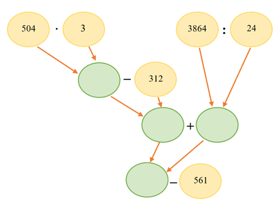
потому что Составь числовое выражение по схеме и найди его значение = 800.
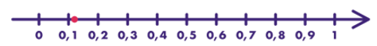
потому что Смотри засечку на прямой: сравни с делениями 0 и 1. Чаще это 4/19 или 5/19, не 13/19.
потому что Если а и b взаимно простые числа, то НОД (а, b) = 1; НОД (15, 30) = 15; НОД (14, 21) = 7.
потому что Какое самое большое число одинаковых букетов можно составить из 10 белых и 15 розовых пионов = 5.
потому что 9:15.
потому что На большом круизном корабле плывут 1550 пассажиров и 370 членов экипажа. Сколько шлюпок должно быть на этом корабле, если в одну шлюпку влезает 45 человек = 43.
потому что 3.
потому что 5.
потому что Ёжик бежит от своей норы до реки 1 км 400 м. Через 15 минут ему останется бежать 350 метров. Сколько минут занимает у ёжика путь от норки до реки = 20.
потому что 250.
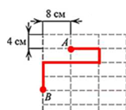
потому что Сложи все горизонтальные и вертикальные отрезки ломаной по клеткам/сторонам прямоугольников.
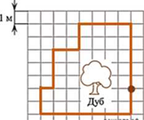
потому что Длина пути = сумма сторон по сетке (клетка 1 м). Обходи контур вокруг дуба.
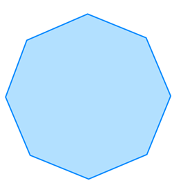
потому что Периметр = число сторон × 4 см.
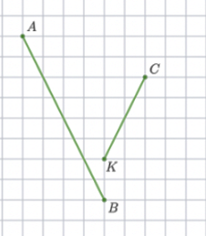
потому что Середины АВ и СК: найди координаты середин по клеткам и расстояние между ними.
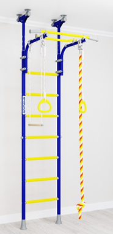
потому что 7.
| \( \frac{25}{80} \) | |
| \( \frac{17}{85} \) | |
| \( \frac{1}{2} \) | |
| \( \frac{243}{120} \) |
потому что 25/80 — это 0,3125; 17/85 — это 0,2; 1/2 — это 0,5; 243/120 — это 2,025.
| 9:4,5 | |
| 3,6:0,9 | |
| 64:8 | |
| 20:4 |
потому что 9:4,5 — это 21:10,5; 3,6:0,9 — это 1,2:0,3; 64:8 — это 32:4; 20:4 — это 1/3 : 1/15.
потому что Мечин, Витков, Трюмов.
потому что 2/30; 120/225; 15/75; 195/975.
потому что 3/7 и 2/7; 89/88 и 76/77.
потому что Сложите число 41,436 с его округлением до десятых и полученную сумму увеличьте на 2,294 = 85,13.
потому что Число уменьшили на треть, и получилось 150. Найдите исходное число = 225.
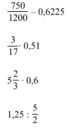
потому что Выполни оба действия, сложи результаты, запиши десятичной дробью.
потому что значение выражения:0,38 : \( \frac{19}{40} \) ∙ 1\( \frac{1}{4} \) = 1.
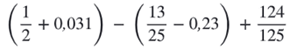
потому что Считай по порядку: скобки, умножение/деление, сложение. Ответ — десятичная дробь.
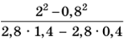
потому что Расставь порядок действий, ответ запиши десятичной дробью.
потому что 50.
потому что 216.
потому что 108,6.
потому что 2.
| Ценой карандаша и стоимостью нескольких таких карандашей | |
| Временем и скоростью при постоянном пути | |
| Числом дней работы маляров и количеством маляров | |
| Числом дней работы трактора и площадью, которую он вспашет |
потому что Цена карандаша и стоимость нескольких таких карандашей — это прямо пропорциональная; Время и скорость при постоянном пути — это обратно пропорциональная; Число дней работы маляров и количество маляров — это обратно пропорциональная; Число дней работы трактора и площадь — это прямо пропорциональная.
| Из 1,75 т золотоносного песка намывают в среднем 0,7 г золота. Сколько граммов золота можно намыть из 2 170 т золотоносного песка? | |
| Со 125 гусей можно получить 4 кг пуха. Сколько кг пуха можно поучить с 875 гусей? | |
| В поваренной книге имеется рецепт пирога с черносливом. Для пирога на 10 человек следует взять 0,1 фунта чернослива. Сколько граммов чернослива необходимо взять для пирога на трёх человек, если 1 фунт = 400 г? |
потому что 875 гусей — это 28 кг пуха (ответ 28); Остальные две задачи сверь по условию: ответы из списка 28, 868 и 12.
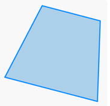
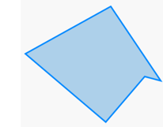
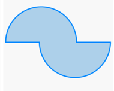
потому что Квадрат — это все стороны равны, углы 90°; Прямоугольник — это углы 90°, противоположные стороны равны; Ромб — это все стороны равны; Параллелограмм — это противоположные стороны параллельны.
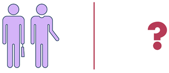
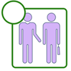
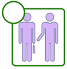
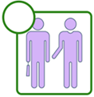
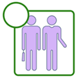
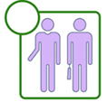
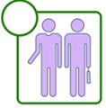
потому что Выбери кусочки зеркально слева и справа от вертикальной оси.
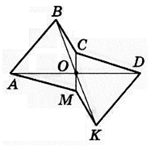
потому что Точка О — центр симметрии шестиугольника ABCDKM. Укажите сторону, симметричную стороне KD относительно точки О = AB.
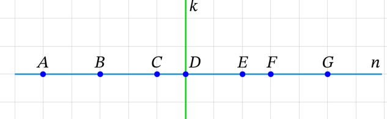
потому что B и F; A и G.
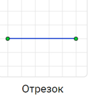
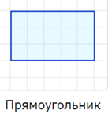
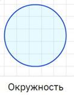
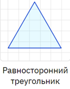
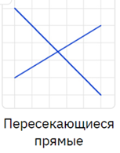
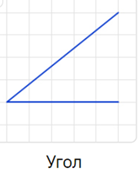
потому что Фигуры с центром симметрии: круг, параллелограмм, правильный шестиугольник, прямоугольник, ромб — не треугольник и не произвольная трапеция.
потому что порядок такой: Посчитай каждый процент и расставь от меньшего к большему.
потому что 28,4.
потому что Длина детали на чертеже, сделанном в масштабе 1:10, равна 14,4 см. Чему будет равна длина этой детали на другом чертеже, сделанном в масштабе 1: 2,5 = 57,6.
потому что 200.
потому что На товар объявили скидку 30 %. Найдите цену товара со скидкой, если начальная цена товара составляла 1900 руб = 1330.
потому что 14663.
потому что 225.
потому что Число, на которое a делится без остатка — это делитель числа a; Число, которое делится без остатка на 2 — это чётное; Число, которое делится без остатка на a — это кратное числа a; Число, которое при делении на 2 даёт остаток 1 — это нечётное.